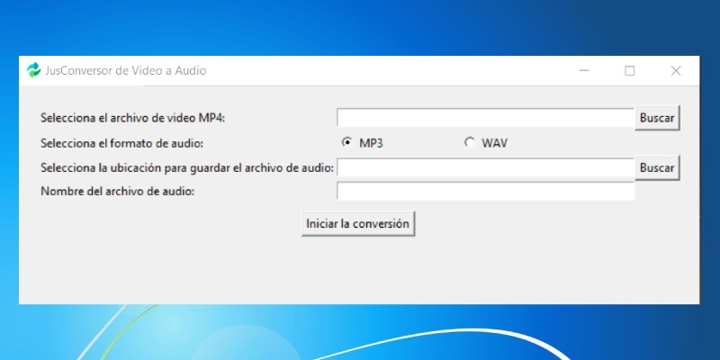

Extraiga fácilmente audio de alta calidad de cualquier video con nuestro convertidor rápido y confiable.
Convierte videos a audio con una calidad de sonido nítida, mp3 wav
Experimente una conversión rápida sin demoras.
Abre el programa,elige el video, haz clic en convertir y obtén tu audio en segundos.